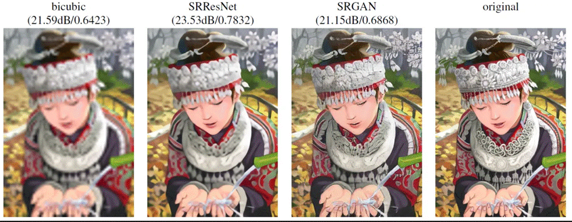
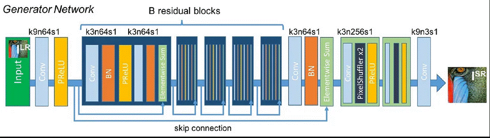
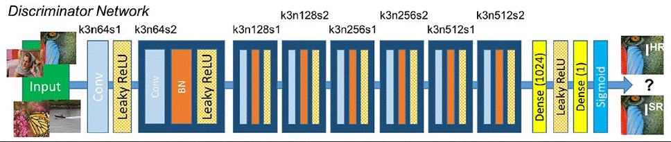

Blogs
Welcome to the cutting-edge of image enhancement technology! In recent years, the field of computer vision has seen remarkable advancements, and one such breakthrough is the Super-Resolution Generative Adversarial Network (SRGAN). In this blog post, we'll explore the ins and outs of SRGAN, its significance in the world of image processing, and how it is transforming the way we perceive and enhance visual content.
What is it?
SRGAN, short for Super-Resolution Generative Adversarial Network, is a deep learning model specifically designed for image super-resolution. Its primary goal is to generate high-resolution images from low-resolution inputs, a task that was previously considered challenging.
What's so special about it?
SRGAN goes beyond traditional image upscaling methods by leveraging deep learning techniques. It doesn't just increase the pixel count but also adds realistic details to the images, resulting in visually appealing and more natural-looking high-resolution content.
Architecture of SRGAN
his formulation's fundamental idea is to develop a generative model G to trick a differentiable discriminator D that has been trained to discern between actual and super-resolved pictures.
By using this method, the generator may be trained to produce results that are very close to authentic photos, making it challenging for D to classify them.The training of D and G is done using the min-max problem.
Create your own Super-Resolution GAN
Create a virtual environment and let’s begin the coding
Let’s start by importing some required libraries
#Import Libraries from torchvision.transforms import Compose, RandomCrop, ToTensor, ToPILImage, CenterCrop, Resize from torch.utils.data import DataLoader, Dataset from PIL import Image import torch import math from os import listdir import numpy as np from torch.autograd import Variable from torch import nn, optim from torchvision.models.vgg import vgg16 from tqdm import tqdm import os
Creating constants and important functions used
# Enable anomaly detection in PyTorch autograd for debugging torch.autograd.set_detect_anomaly(True) # Constants for image processing UPSCALE_FACTOR = 4 CROP_SIZE = 88 # Mean and standard deviation values for image normalization mean = np.array([0.485, 0.456, 0.406]) std = np.array([0.229, 0.224, 0.225])
Now, I will load in some code for the dataset and dataloaders.
# Check if the given filename has an image file extension def is_image_file(filename): return any(filename.endswith(extension) for extension in ['.png', '.jpg', '.jpeg', '.PNG', '.JPG', '.JPEG']) # Calculate a valid crop size based on the upscale factor def calculate_valid_crop_size(crop_size, upscale_factor): return crop_size - (crop_size % upscale_factor) # Define a transformation for high-resolution training images def train_hr_transform(crop_size): return Compose([ RandomCrop(crop_size), ToTensor(), ]) # Define a transformation for low-resolution training images def train_lr_transform(crop_size, upscale_factor): return Compose([ ToPILImage(), Resize(crop_size // upscale_factor, interpolation=Image.BICUBIC), ToTensor() ]) # Define a transformation for displaying images def display_transform(): return Compose([ ToPILImage(), Resize(400), CenterCrop(400), ToTensor()# Convert the image to a PyTorch tensor ]) class TrainDatasetFromFolder(Dataset): def __init__(self, dataset_dir, crop_size, upscale_factor): super(TrainDatasetFromFolder, self).__init__() # Get the list of image filenames in the dataset directory self.image_filenames = [join(dataset_dir, x) for x in listdir(dataset_dir) if is_image_file(x)] crop_size = calculate_valid_crop_size(crop_size, upscale_factor) self.hr_transform = train_hr_transform(crop_size) self.lr_transform = train_lr_transform(crop_size,upscale_factor) # Load and apply high-resolution and low-resolution transformations to the images def __getitem__(self, index): hr_image = self.hr_transform(Image.open(self.image_filenames[index])) lr_image = self.lr_transform(hr_image) return lr_image, hr_image # Return the number of images in the dataset def __len__(self): return len(self.image_filenames)
Now let’s load the trainset
# Creating an instance of the TrainDatasetFromFolder class
train_set = TrainDatasetFromFolder("Path to your HR Dataset", crop_size=CROP_SIZE, upscale_factor=UPSCALE_FACTOR)
# Creating a DataLoader for training set
trainloader = DataLoader(train_set, batch_size=32, num_workers=4, shuffle=True)
Load the Generator Architecture
GENERATOR network G
The residual blocks (B=16) were first generated by ResNet. Two convolutional layers with tiny 3x3 kernels and 64 feature maps are utilised within the residual block. Batch-normalization layers and the activation function ParametricReLU are employed after that.
class Generator(nn.Module): def __init__(self, scale_factor): super(Generator, self).__init__() # Determine the number of upsample blocks based on the scale factor upsample_block_num = int(math.log(scale_factor, 2)) # Initial convolutional block self.block1 = nn.Sequential( nn.Conv2d(3, 64, kernel_size=9, padding=4), nn.PReLU() ) # Residual blocks self.block2 = ResidualBlock(64) self.block3 = ResidualBlock(64) self.block4 = ResidualBlock(64) self.block5 = ResidualBlock(64) self.block6 = ResidualBlock(64) # Additional convolutional block self.block7 = nn.Sequential( nn.Conv2d(64, 64, kernel_size=3, padding=1), nn.BatchNorm2d(64) ) # Upsample blocks block8 = [UpsampleBlock(64, 2) for _ in range(upsample_block_num)] block8.append(nn.Conv2d(64, 3, kernel_size=9, padding=4)) self.block8 = nn.Sequential(*block8) def forward(self, x): #Initial block block1 = self.block1(x) # Residual blocks block2 = self.block2(block1) block3 = self.block3(block2) block4 = self.block4(block3) block5 = self.block5(block4) block6 = self.block6(block5) block7 = self.block7(block6) block8 = self.block8(block1 + block7) # Apply tanh activation and normalization to get the final output return (torch.tanh(block8) + 1) / 2
Two learned sub-pixel convolution layers raise the input image's resolution.
Load the Discriminator Architecture
DISCRIMINATOR network D
Activate LeakyReLU (α=0.2) and prevent max-pooling across the network.
The maximization problem is trained onto the discriminator network.
Eight convolutional layers make up the network, and when the number of 3×3 filter kernels increases—from 64 to 512—it does so by a factor of two, much like in the VGGnetwork.
Every time the number of features doubles, the picture resolution is decreased using stepped convolutions.
To determine the likelihood of classifying a sample, two dense layers and a final sigmoid activation function are used after the generated 512 feature maps.
class Discriminator(nn.Module): def __init__(self): super(Discriminator, self).__init__() # Sequential network consisting of convolutional and activation layers self.net = nn.Sequential nn.Conv2d(3, 64, kernel_size=3, padding=1), # Input convolutional layer with 3 channels, output 64 channels nn.LeakyReLU(0.2), # Leaky ReLU activation with a negative slope of 0.2 nn.Conv2d(64, 64, kernel_size=3, stride=2, padding=1), # Convolutional layer downsampling by stride 2 nn.BatchNorm2d(64), nn.LeakyReLU(0.2), nn.Conv2d(64, 128, kernel_size=3, padding=1), # Convolutional layer with 128 output channels nn.BatchNorm2d(128), nn.LeakyReLU(0.2), nn.Conv2d(128, 256, kernel_size=3, padding=1), nn.BatchNorm2d(256), nn.LeakyReLU(0.2), nn.Conv2d(256, 256, kernel_size=3, stride=2, padding=1), nn.BatchNorm2d(256), nn.LeakyReLU(0.2), nn.Conv2d(256, 512, kernel_size=3, padding=1), nn.BatchNorm2d(512), nn.LeakyReLU(0.2), nn.Conv2d(512, 512, kernel_size=3, stride=2, padding=1), nn.BatchNorm2d(512), nn.LeakyReLU(0.2), nn.AdaptiveAvgPool2d(1), nn.Conv2d(512, 1024, kernel_size=1), nn.LeakyReLU(0.2), nn.Conv2d(1024, 1, kernel_size=1) ) def forward(self, x): batch_size=x.size()[0] return torch.sigmoid(self.net(x).view(batch_size))
Implement the loss functions
The TVLoss
class TVLoss(nn.Module): def __init__(self, tv_loss_weight=1): super(TVLoss, self).__init__() # Initialize with the provided TV loss weight self.tv_loss_weight=tv_loss_weight def forward(self, x): batch_size=x.size()[0] h_x = x.size()[2] w_x = x.size()[3] # Calculate the number of elements in height and width dimensions count_h = self.tensor_size(x[:, :, 1:, :]) count_w = self.tensor_size(x[:, :, :, 1:]) # Calculate TV loss along height and width h_tv = torch.pow(x[:, :, 1:, :] - x[:, :, :h_x - 1, :], 2).sum() w_tv = torch.pow(x[:, :, :, 1:] - x[:, :, :, :w_x - 1], 2).sum() # Return the total variation loss return self.tv_loss_weight * 2 * (h_tv / count_h + w_tv / count_w) / batch_size @staticmethod def tensor_size(t): # Helper method to calculate the total number of elements in tensor return t.size()[1] * t.size()[2] * t.size()[3]
The Generator Loss
class GeneratorLoss(nn.Module): def __init__(self): super(GeneratorLoss, self).__init__() # Load VGG16 pretrained model and extract features until layer 31 vgg = vgg16(pretrained=True) loss_network = nn.Sequential(*list(vgg.features)[:31]).eval() # Set requires_grad to False for all parameters in the loss network for param in loss_network.parameters(): param.requires_grad = False # Save the modified VGG model as the loss network self.loss_network = loss_network # Define Mean Squared Error (MSE) loss self.mse_loss = nn.MSELoss() # Create an instance of TVLoss for Total Variation loss self.tv_loss = TVLoss() def forward(self, out_labels, out_images, target_images): # Adversarial loss: mean of 1 - out_labels (maximizing out_labels for fake images) adversial_loss = torch.mean(1 - out_labels) # Perception loss: MSE loss between generated images and target images perception_loss = self.mse_loss(out_images, target_images) # Image loss: MSE loss between generated images and target images image_loss = self.mse_loss(out_images, target_images) # Total Variation (TV) loss to encourage spatial smoothness tv_loss = self.tv_loss(out_images) # Combine all loss components with specified weights return image_loss + 0.001 * adversial_loss + 0.006 * perception_loss + 2e-8 * tv_loss
Now we implement the residual block here
# Now we will start implementing the model. class ResidualBlock(nn.Module): def __init__(self, channels): super(ResidualBlock, self).__init__() # First convolutional layer with kernel_size=3 and padding=1 self.conv1 = nn.Conv2d(channels, channels, kernel_size=3, padding=1) nn.init.kaiming_normal_(self.conv1.weight, nonlinearity='relu') self.bn1 = nn.BatchNorm2d(channels) self.prelu = nn.PReLU() self.conv2 = nn.Conv2d(channels, channels, kernel_size=3, padding=1) self.bn2 = nn.BatchNorm2d(channels) def forward(self, x): # Forward pass through the residual block residual = self.conv1(x) residual = self.bn1(residual) residual = self.prelu(residual) residual = self.conv2(residual) residual = self.bn2(residual) return x + residual
Up-sampling the Neural Network Module
class UpsampleBlock(nn.Module): def __init__(self, in_channels, up_scale): super(UpsampleBlock, self).__init__() # Convolutional layer to increase the number of channels self.conv = nn.Conv2d(in_channels, in_channels * up_scale ** 2, kernel_size=3, padding=1) # PixelShuffle layer for upscaling self.pixel_shuffle = nn.PixelShuffle(up_scale) self.prelu = nn.PReLU() def forward(self, x): # Forward pass through the UpsampleBlock x = self.conv(x) x = self.pixel_shuffle(x) x = self.prelu(x) return x
Standard device selection
Implementation of the function and class created above
Set the optimizer and learning rate
Generate results
# Check if CUDA (GPU) is available and set device accordingly
device = torch.device("cuda" if torch.cuda.is_available() else "cpu")
# Instantiate the Generator and Discriminator models
netG = Generator(UPSCALE_FACTOR)
netD = Discriminator()
# Instantiate the GeneratorLoss criterion for training the Generator
generator_criterion = GeneratorLoss()
# Move models and loss criterion to the selected device (CPU or GPU)
generator_criterion = generator_criterion.to(device)
netG = netG.to(device)
netD = netD.to(device)
# Set up Adam optimizers for Generator and Discriminator
optimizerG = optim.Adam(netG.parameters(), lr=0.001)
optimizerD = optim.Adam(netD.parameters(), lr=0.001)
results = {
"d_loss":[],
"g_loss":[],
"d_score": [],
"g_score": []
}
print(results)
Set the desired Epoch number as per the size of the dataset , for General I use 150
N_EPOCHS = 150
Start the training
for epoch in range(1, N_EPOCHS + 1):
train_bar = tqdm(trainloader)
running_results = {'batch_sizes':0, 'd_loss':0,
"g_loss":0, "d_score":0, "g_score":0}
netG.train()
netD.train()
for data, target in train_bar:
g_update_first = True
batch_size = data.size(0)
running_results['batch_sizes'] += batch_size
real_img = Variable(target)
real_img = real_img.to(device)
z = Variable(data)
z = z.to(device)
## Update Discriminator ##
fake_img = netG(z)
netD.zero_grad()
real_out = netD(real_img).mean()
fake_out = netD(fake_img).mean()
d_loss = 1 - real_out + fake_out
d_loss.backward(retain_graph = True)
optimizerD.step()
## Now update Generator
fake_img = netG(z)
fake_out = netD(fake_img).mean()
netG.zero_grad()
g_loss = generator_criterion(fake_out, fake_img, real_img)
g_loss.backward()
fake_img = netG(z)
fake_out = netD(fake_img).mean()
optimizerG.step()
running_results['g_loss'] += g_loss.item() * batch_size
running_results['d_loss'] += d_loss.item() * batch_size
running_results['d_score'] += real_out.item() * batch_size
running_results['g_score'] += fake_out.item() * batch_size
## Updating the progress bar
train_bar.set_description(desc="[%d/%d] Loss_D: %.4f Loss_G: %.4f D(x): %.4f D(G(z)): %.4f" % (
epoch, N_EPOCHS, running_results['d_loss'] / running_results['batch_sizes'],
running_results['g_loss'] / running_results['batch_sizes'],
running_results['d_score'] / running_results['batch_sizes'],
running_results['g_score'] / running_results['batch_sizes']
))
netG.eval()
netG.train()
Save the Generator and Discriminator model seperately
import torch
# Assuming you have trained your models and stored them in 'netG' and 'netD'
# Modify the path accordingly
epoch_number = 150.1
generator_save_path = 'folder path/generator_model_epoch_{}.pth'.format(epoch_number)
discriminator_save_path = 'folder path/discriminator_model_epoch_{}.pth'.format(epoch_number)
# Save the generator and discriminator models
torch.save(netG.state_dict(), generator_save_path)
torch.save(netD.state_dict(), discriminator_save_path)
Applications and Practical Uses
Super-Resolution Generative Adversarial Networks (SRGAN) has found applications in various domains due to its ability to enhance image resolution while preserving and generating realistic details. Here are some notable applications of SRGAN:
Photography
High-Resolution Image Up-scaling: Photographers can use SRGAN to enhance the resolution of low-resolution images without losing image quality, allowing for better print quality or display on larger screens
Video Enhancement
Upgrading Video Quality: SRGAN can be applied to enhance the quality of low-resolution video frames, improving the visual experience of video content. This is particularly useful for restoring old or degraded videos.
Medical Imaging
Enhancing Medical Imagery: In medical imaging, SRGAN can be utilized to improve the resolution of images obtained through various diagnostic techniques, aiding in more accurate analysis and diagnosis
Satellite Imagery
Improving Satellite Image Resolution: SRGAN can enhance the resolution of satellite images, providing clearer and more detailed views of landscapes, urban areas, and environmental features.
Art and Graphics Design
Creating High-Resolution Artwork: Artists and graphic designers can use SRGAN to increase the resolution of digital artwork, ensuring that the final output is crisp and detailed.
Surveillance and Security
Enhancing Surveillance Footage: Security systems and surveillance cameras can benefit from SRGAN by improving the quality of captured images, which can be crucial for identifying details in forensic analysis.
Virtual Reality (VR) and Augmented Reality (AR)
Enhancing Visual Realism: SRGAN can be employed to enhance the visual quality of images used in VR and AR applications, providing users with more immersive and realistic experiences.
Remote Sensing
High-Resolution Remote Sensing: SRGAN can be applied to enhance the resolution of remote sensing data, such as images captured by drones or other aerial platforms, improving the accuracy of data analysis in fields like agriculture and environmental monitoring.
Facial Recognition
Improving Facial Detail: In facial recognition systems, SRGAN can contribute to better face recognition accuracy by generating high-resolution facial images from lower-resolution inputs.
Consumer Electronics
TV and Display Enhancement: SRGAN can be integrated into consumer electronics, such as smart TVs and displays, to upscale lower-resolution content for a more enjoyable and immersive viewing experience.
Challenges
Computational Complexity
Training SRGAN models demands substantial computational resources and time. The complexity of the model architecture, especially in the context of adversarial training, can be a hindrance for practical implementation.
Memory Requirements
Large-scale deep learning models like SRGAN require substantial memory, making it challenging for deployment on devices with limited resources, such as smartphones or embedded systems.
Training Dataset Quality:
The performance of SRGAN depends on the quality and diversity of the training dataset. Incomplete or biased datasets may lead to artifacts or inaccuracies in the generated high-resolution images.
Real-Time Applications
Achieving real-time performance remains a challenge, particularly for applications such as video streaming or live video processing. Optimizing the computational efficiency of SRGAN for these scenarios is an ongoing area of research.
Generalization to Diverse Scenes
SRGAN models trained on specific types of images may struggle to generalize well to diverse scenes or unconventional inputs. Ensuring robust performance across a wide range of content types is an active research challenge.
Development and Future Fore-sighting
Optimizing Training Algorithms
Researchers are working on developing more efficient training algorithms for SRGAN to reduce the computational burden and speed up the training process. This includes exploring novel optimization techniques and model architectures.
Memory-Efficient Models
To address memory constraints, there is ongoing research to design more memory-efficient SRGAN variants that can be deployed on devices with limited resources, expanding the practical applications of the technology.
Transfer Learning and Domain Adaptation
Investigating transfer learning and domain adaptation techniques allows SRGAN models to generalize better to new or unseen types of images. This can enhance the model's applicability in diverse real-world scenarios.
Real-Time Processing
Efforts are being made to develop lightweight SRGAN models capable of real-time image and video processing. This involves optimizing architectures and algorithms for faster inference without compromising on quality.
Addressing Artifacts and Image Quality
Ongoing research focuses on refining SRGAN models to reduce artifacts and improve the perceptual quality of generated images. This includes incorporating human perceptual factors into the training process and exploring advanced loss functions.
User-Friendly Implementations
Developing user-friendly implementations and tools for SRGAN facilitates wider adoption. This involves creating accessible software libraries, frameworks, or applications that make it easier for practitioners to apply SRGAN to their specific use cases.
Conclusion
As we delve into the era of SRGAN and witness its trans-formative impact on image enhancement, it's clear that we are at the forefront of a technological revolution. The marriage of deep learning and image processing has given birth to a powerful tool that not only increases resolution but elevates the visual experience to new heights. Keep an eye on SRGAN as it continues to evolve, promising a future where the line between reality and digital creation becomes increasingly blurred.References
- Bell, S., Zitnick, C. L., Bala, K., Girshick, R. (2016). Inside-outside net: Detecting objects in context with skip pooling and recurrent neural networks. In: IEEE Conference on Computer Vision and Pattern Recognition.
- Dong, C., Loy, C. C., He, K., Tang, X. (2014) Learning a deep convolutional network for image super-resolution. In: European Conference on Computer Vision
- Shi, W., Caballero, J., Huszár, F., Totz, J., Aitken, A. P., Bishop, R., Rueckert, D., Wang, Z. (2016) Real-time single image and video super-resolution using an efficient sub-pixel convolutional neural network. In: IEEE Conference on Computer Vision and Pattern Recognition